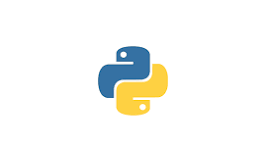
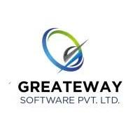
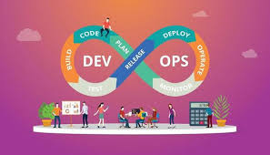
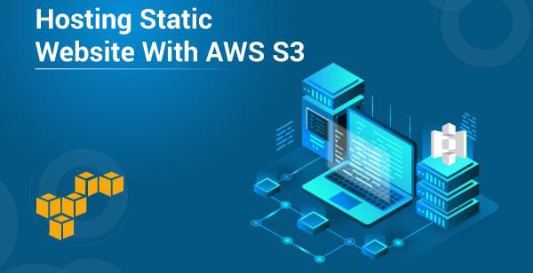

Languages
HTML

CSS
C
C++
Java

Python
AWS

DevOps
Software Developer & Programming Enthusiast
Aspiring Cloud & DevOps Engineer
I am currently pursuing a Master’s degree in Computer Science,
driven by a strong passion for technology, innovation, and continuous learning.
I enjoy exploring modern technologies and applying theoretical knowledge to practical, real-world scenarios.
I have a keen interest in problem-solving and building efficient, scalable solutions.
I am particularly enthusiastic about Cloud Computing and DevOps, with hands-on experience in AWS services
such as EC2, S3, Lambda, VPC, IAM, and CloudWatch, along with exposure to automation, CI/CD pipelines, and containerization.
I aspire to grow as a Cloud & DevOps Engineer, contributing to secure, reliable,
and high-performing cloud solutions while continuously enhancing my technical skills
and staying aligned with industry best practices.
HTML
CSS
C
C++
Java

Python
AWS
DevOps

Greateway Software Pvt. Ltd.
Strong understanding of Cloud Computing with hands-on experience in Amazon Web Services (AWS) including EC2, S3, IAM, Lambda, VPC, and CloudWatch. Experienced in deploying scalable applications, configuring secure access using IAM roles and policies, monitoring system performance, and managing cloud resources efficiently. Familiar with best practices for availability, security, and cost optimization in AWS environments.
Practical knowledge of DevOps practices focused on automation and continuous delivery. Experienced with CI/CD pipelines using Jenkins and GitHub, containerization using Docker, and basic container orchestration concepts with Kubernetes. Familiar with Infrastructure as Code (Terraform), configuration management (Ansible), and collaborative DevOps workflows to improve deployment speed, reliability, and system stability.
Hands-on experience with Linux (Ubuntu) operating system for server administration and application deployment. Familiar with basic and intermediate Linux commands, file system management, user and permission handling, process monitoring, package installation, and troubleshooting. Used Linux environments for deploying applications, managing servers, and supporting DevOps workflows.

Developed a complete CI/CD pipeline for a web application to automate
the build, test, and deployment process.
Used GitHub for version control and Jenkins to create automated pipelines
triggered on code commits. The application was containerized using Docker
to ensure consistency across environments and deployed on AWS EC2.
Implemented automated testing, continuous integration, and continuous
deployment to reduce manual effort, improve deployment speed, and
maintain application reliability. This project strengthened my
understanding of DevOps practices, automation, and real-world deployment workflows.

Hosted a static website on AWS S3 using bucket policies and IAM-based
access control to ensure secure and reliable access.
Configured public access settings and optimized static content delivery
for better performance. Gained hands-on experience in cloud storage,
security, and hosting scalable web applications on AWS.
This project enhanced my understanding of AWS services, permissions,
and best practices for static website hosting in a cloud environment.
I will help you in your next project. Contact me through details given below.
Address: Kharadi, Pune
Email: sanikapatil196@gmail.com
Let’s Chat